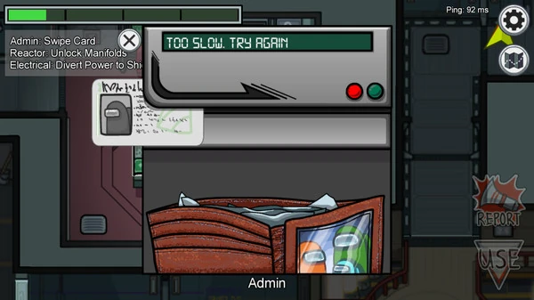
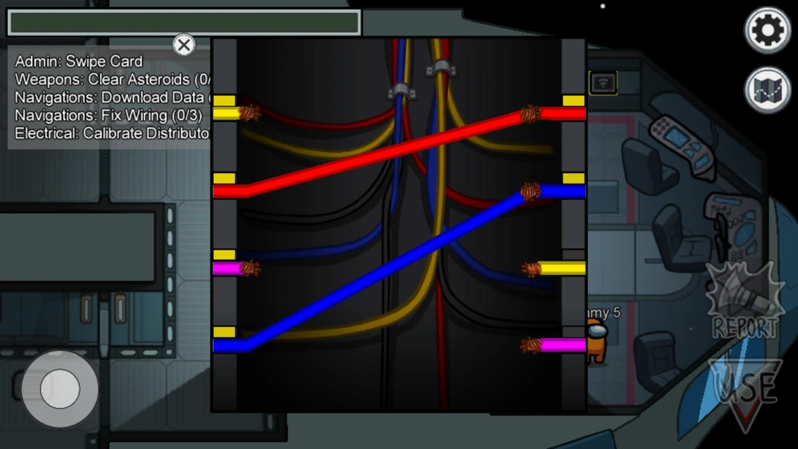
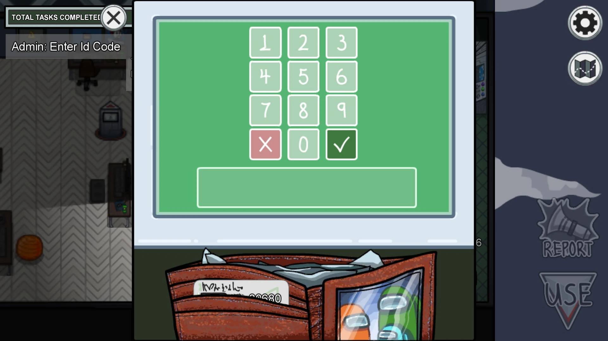

概要
『Among Us』はクルー陣営とインポスター陣営に分かれて宇宙船を駆け回る正体隠匿系アクションゲームです。
ゲームの特徴
- 『Among Us!』は人狼ゲームにアクション要素が加わった新感覚で遊べるゲームです。 村人側である「クルー」は勝利のために、マップ内の各所を移動しながらタスクをこなす必要があり、一人になりやすいところがポイント。 人狼である「インポスター」は、タスクをこなすフリをしながら、隙を見てクルーを狩っていくことになります。薄暗い中、敵か味方かわからない人とすれ違う瞬間のドキドキ感が本作の魅力です。 また、ルール・操作がシンプルである上、1ゲームにかかる時間が短いのが特徴。時間が空いたときに気軽にサクッと始められるのが良い点です。 また他のプレイヤーとの議論がカギとなり、ゲームが展開されていきます。誰を信じるべきか・誰を疑うべきかなどを推理しながら心理戦を楽しめるのが魅力です。
様々な役職
- シェイプシフター: 他のプレイヤーに変身する能力を持つインポスター。
- エンジニア: クルーメイトながらベントを使用可能。
- シェリフ: インポスターを直接排除できるクルーメイト。
- 科学者: リアルタイムでバイタル情報を確認可能。
タスク一覧

カード読み込み
財布からカードを取り出して、横へスワイプする。

ワイヤー配線
左右の同じ色の配線をつなぐ。3箇所で消化する必要あり。

IDコード入力
カードを取り出して、IDナンバーを入力する。
このようなボタンを押して待つだけのタスクもあります。
ダウンロードを開始してください。